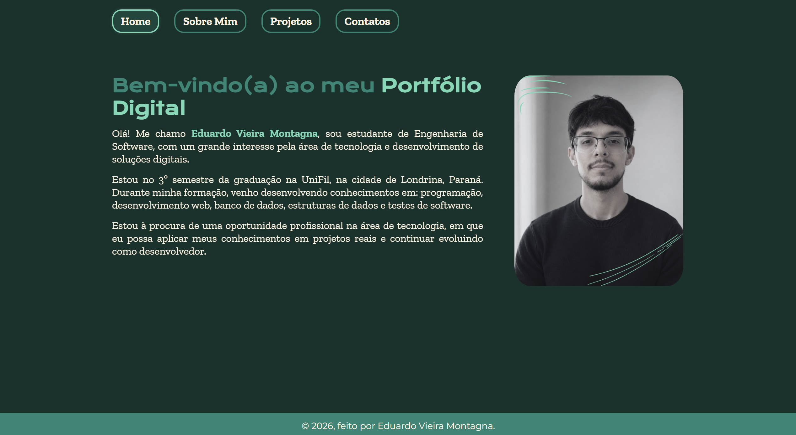
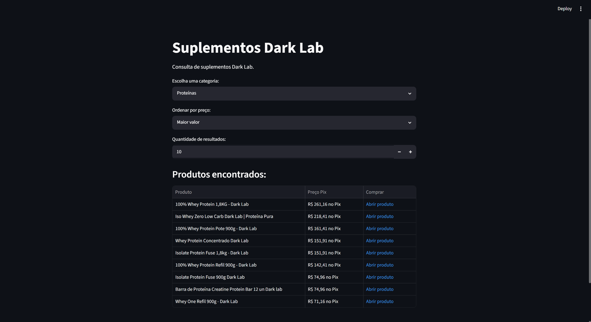
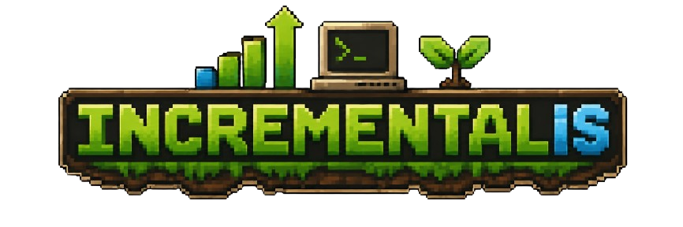

Portfólio Digital
Site pessoal desenvolvido para apresentar minha trajetória, habilidades e formas de contato.
HTML, CSS e JavaScriptAqui estão alguns projetos desenvolvidos durante minha jornada acadêmica e meus estudos em tecnologia.

Site pessoal desenvolvido para apresentar minha trajetória, habilidades e formas de contato.
HTML, CSS e JavaScript
Projeto acadêmico em Python com web scraping e Streamlit.
Python
Jogo clicker educacional sobre programação e sustentabilidade, ainda em desenvolvimento.
Em breve